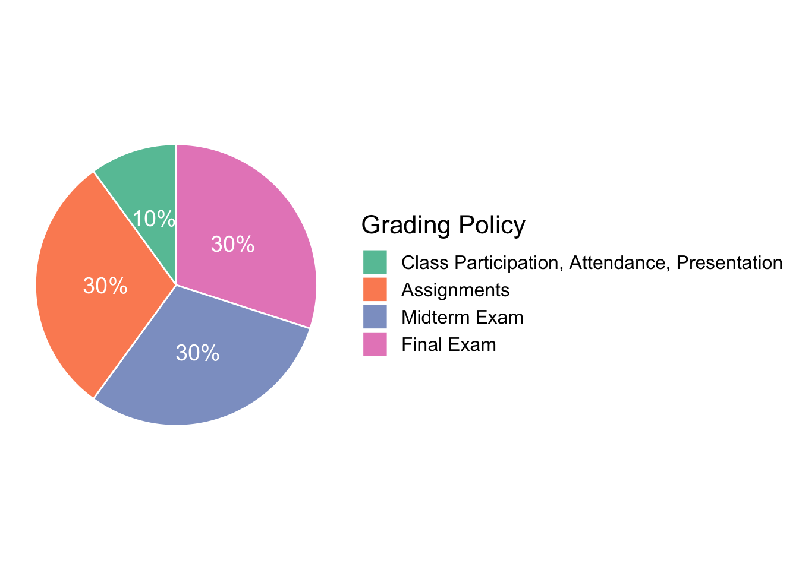

ENC2045: Computational Linguistics
This site is last-updated on 2020-10-23
Annoucements
Important course information will be posted on this web page and announced in class. You are responsible for all material that appears here and should check this page for updates frequently.
- 2020-10-23: This course website is still under construction…
- 2020-10-07: This course has prerequisites. Please read the FAQ very carefully.
Course Description
Computational Linguistics (CL) is now a very active sub-discipline in applied linguistics. Its main focus is on the computational text analytics, which is essentially about leveraging computational tools, techniques, and algorithms to process and understand natural language data (in spoken or textual formats). Therefore, this course aims to introduce useful strategies and common workflows that have been widely adopted by data scientists to extract useful insights from natural language data. In particular, we will focus on textual data.
A selective collection of potential topics may include:
- A Pipeline for Natural Language Processing
- Text Normalization
- Text Tokenization
- Parsing and Chunking
- Issues for Chinese Language Processing
- Feature Engineering and Text Vectorization
- Sentiment Analysis
- Tex Clustering and Topic Modeling
- Network Analysis
- Machine Learning and Computational Linguistics
- Deep Learning and Computational Linguistics
- Explainable Artificial Intelligence and Computational Linguistics
This course is extremely hands-on and will lead the students through classic examples of many task-oriented implementations via in-class theme-based tutorial sessions. The main coding language used in this course is Python . We will make extensive use of the language. It is assumed that you know or will quickly learn how to program in Python. In fact, this course assumes that every enrolled student has working knowledge of Python. (If you are not sure if you fulfill the prerequisite, please contact the instructor first.) A test on Python Basics will be conducted on the second week of the class to ensure that we are all on the same page.
Please note that this course is designed specifically for students in the humanities; computer science majors (who are not linguists) are encouraged to take this course.
Course Schedule
(The schedule is tentative and subject to change. Please pay attention to the announcements made during the class.)
| Week | Topic |
|---|---|
| Week 1 | Computational Linguistics: Overview |
| Week 2 | Quiz on Python Basics + NPL Pipeline |
| Week 3 | NPL Pipeline |
| Week 4 | Machine Learning Basics |
| Week 5 | Regression and Classification Problems |
| Week 6 | Feature Engineering and Text Vectorization |
| Week 7 | Text Clustering and Topic Modeling |
| Week 8 | Senitment Analysis |
| Week 9 | Midterm Exam |
| Week 10 | Toxicity Detection |
| Week 11 | Deep Learning NLP (Embeddings) |
| Week 12 | Deep Learning NLP (Doc2Vec) |
| Week 13 | Deep Learning NLP (RNN/LSTM) |
| Week 14 | Deep Learning NLP (Seq2Seq) |
| Week 15 | Deep Learning NLP (BERT) |
| Week 16 | Explainable AI |
| Week 17 | Prospect of Linguistics in AI NLP |
| Week 18 | Final Exam |
Course Requirement

Course Materials
All the course materials are available on the course website. Please consult the instructor for the direct link to the course materials. They will be provided as a series of online packets (i.e., handouts, script source codes etc.) on the course website.
Logistics
- Course Website: ENC2045 Computational Linguistics
- Instructor’s Email Address: alvinchen@ntnu.edu.tw
- Instructor’s Name: Alvin Chen
- Office Hours: By appointment
If you have any further questions related to the course, please consult FAQ on our course website or write me at any time at alvinchen@ntnu.edu.tw.
Disclaimer & Agreement
While I have made every attempt to ensure that the information contained on the Website is correct, I am not responsible for any errors or omissions, or for the results obtained from the use of this information. All information on the Website is provided “as is”, with no guarantee of completeness, accuracy, timeliness or of the results obtained from the use of this information, and without warranty of any kind, express or implied.
You may print a copy of any part of this website for your personal or non-commercial use. Without the author’s prior written consent, you cannot disclose confidential information of the website (e.g., log-in username and password) to any third party.